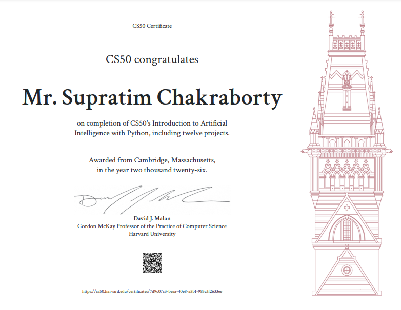

Supratim, an MCA and OCA DBA, brings over 22 years of experience in Oracle 11g, MIS, and data analysis. He currently serves as MIS-In-Charge at Samagra Shiksha Mission (SSM), Kolkata, where his work spans Oracle DBA administration, PL/SQL and software development, website development, and the generation of all types of MIS reports.
His core competency lies in Oracle technologies (Oracle 11g, PL/SQL, DBA, and APEX), data analysis, and data visualization. He also serves as a training expert at SSM and has recently taken up teaching Artificial Intelligence, Cybersecurity, and Data Science — including conducting seminars on AI and Cybersecurity.

- Artificial Intelligence and Data Science (AIDS) for Higher Secondary, WBCHSE, RSP
- Computer Application in a Nutshell, Vol. 1 — April 2020, Amazon (Kindle & Paperback)
- Object Oriented Programming (OOP) Tutorial, Vol. 1: Basics [Java and BlueJ] — 2020, Amazon (Kindle)
- Learn HTML and CSS: Web Page Design — June 2021
- Website Development for SSM Kolkata — Role: DBA and programming
- Civil Works Software Development — Role: Programmer (database and front end)
- Oracle upgrade — Installation and upgradation of Oracle 11g from 9i
- Oracle 11g Express Edition — Installed on Ubuntu Linux
- Research study — Impact of ICT in Education (data analysis)
- Cyber Security Guideline — Prepared for students and teachers
- Research paper on Quality Education — Published on udise.in by NUEPA, New Delhi
- Leads and motivates the MIS team as MIS-In-Charge
- Coordinates workshops for Information Acquisition and CAL (Computer Aided Learning) teacher training
- Regular participant in national-level workshops on DBMS, MIS, CAL, and research activity
- Uses GIS software to map schools, wards, and boroughs across Kolkata
Recognition of Composite Objects Using Mathematical Simulation and Reconstruction with Data Compression
Venue: E.C.S.U., Indian Statistical Institute, Kolkata · Language: C · OS: Windows Me · Duration: 6 months
- ARPIT SWAYAM Course (2020) — Data Analysis for Social Science Teachers, University of Hyderabad
- OCA DBA (2009) — Oracle University
- MCA, First Class (2003) — Vidyasagar University (Regular)
- B.Sc. Mathematics (Honours), with Economics and Statistics — University of Calcutta, 1999
- Certificate for a 3-day training programme (12–14 February 2008) on SSM planning process, conducted by the National Institute of Administrative Research, LBSNAA, Mussoorie, sponsored by MHRD, Government of India
- Third place, open-stage quiz contest, Kalikapur, Paschim Medinipur, 2003
- Writes Bengali poetry; poems published in Nabankur, Dinkshan, and Nandam magazines, Kolkata
- Author of the poetry collection Bristi Namuk Tarpor, published by Ramkrishna Sarada Publication, Kolkata
- Participation certificate, Tally (India) Pvt. Ltd.
- Participation certificate, NUEPA (jointly organised by UNICEF, National University of Educational Planning and Administration, and SSA)
- Course completion certificate — Oracle 9i DBA, SQLSTAR
- Participation certificate — Cyber Wellness Olympiad, 2018–19
- LearnWithJoy YouTube Channel — video lectures on Computational Mathematics (Optimization), Statistical Data Analysis, OOP with Java & BlueJ, and MS Office in Bengali